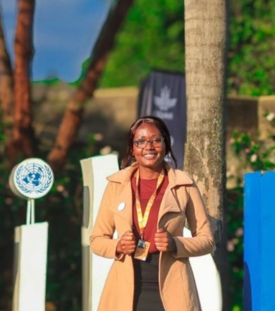

About Me
Hello! I’m Rosemary Wambui Maina — an Environmental Conservation and Natural Resources Management graduate passionate about biodiversity conservation, climate action, and empowering communities to create lasting change.
I have led campus tree-planting initiatives, organized clean-ups, and coordinated SDG campaigns as Vice Chair of the Eco Advocacy Society. As Youth Coordinator at the Malizingira Movement, I’ve mobilized youth for climate campaigns and helped design sustainability projects.
I enjoy transforming research and data into actionable solutions that promote healthy ecosystems and inspire community participation in conservation efforts.
Skills & Tools
- Environmental Research & Data Analysis (Excel)
- Community Mobilization & Project Coordination
- Report Writing & Communication
- Public Speaking & Youth Leadership
Experience
- Vice Chair — Eco Advocacy Society (University of Nairobi) — Coordinated tree-planting, campus clean-ups, and awareness events with students and administration.
- Youth Coordinator — Malizingira Movement — Mobilized youth for climate campaigns and sustainability initiatives.
- Attaché — Ministry of Environment, Climate Change & Forestry — Assisted in report writing, documentation, and visitor coordination at the State Department for Forestry.